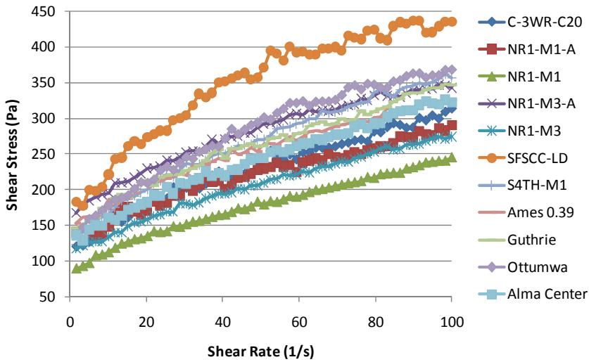
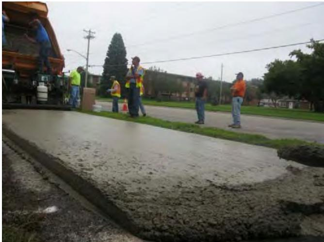
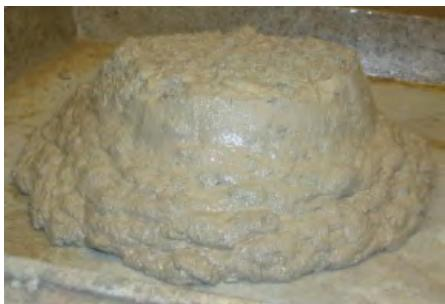
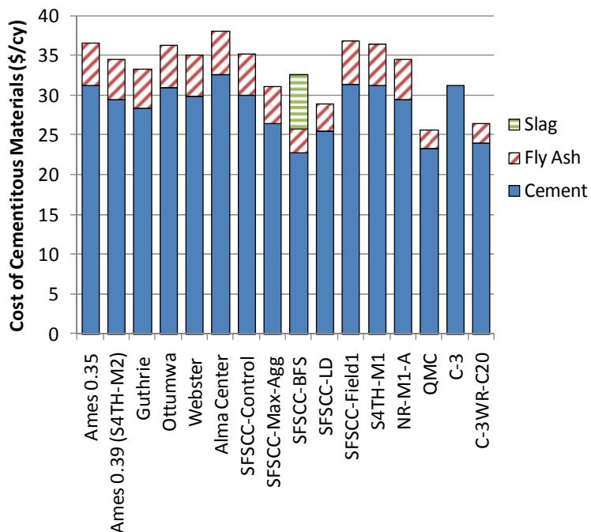

Semi-Flowable Self-Consolidating Concrete
Semi-flowable self-consolidating concrete is a specialized fresh concrete mixture engineered to flow under its own weight into moving formwork without external vibration while simultaneously developing rapid early-age stiffness to retain its extruded shape [1]. The material functions as a two-phase system where an excess mortar matrix coats coarse aggregate particles, providing the necessary fluidity for placement and resistance to segregation [1]. Its performance is governed by a precise balance of rheological parameters, including viscosity, yield stress, and thixotropy, which collectively control flow behavior, self-consolidation capability, and shape stability during the green state [1]. Design strategies typically target these rheological properties to ensure adequate workability for machine placement while preventing particle settlement and edge slump immediately after extrusion [1].
This overview of Semi-Flowable Self-Consolidating Concrete from CP Tech Center reports also covers the following subtopics: Mini-Paver and SFSCC Mix Proportioning Method.
Semi-flowable self-consolidating concrete unifies mixtures that flow under their own weight yet retain enough stiffness to hold their shape immediately after placement. The SFSCC Mix Proportioning Method achieves this critical balance of self-consolidating flow and immediate shape retention required for slip-form paving by sequentially designing the mortar matrix, determining coarse aggregate content, and validating the mixture through laboratory simulation. Mini-Paver serves as the critical verification tool that validates whether a semi-flowable self-consolidating concrete mixture possesses the precise balance of flowability and shape retention required for successful slip-form paving.
Sub-concepts (2)
Key findings
- The performance-based mix design reliably produced semi-flowable self-consolidating concrete mixes that satisfied required flowability, consolidation, and shape-holding criteria while delivering satisfactory hardened properties [1].
- The addition of nano-clay enhanced green strength and shape stability but resulted in higher yield stress and thixotropy compared to conventional concrete, despite exhibiting lower viscosity [1].
- Hardened semi-flowable self-consolidating concrete developed compressive strength faster than conventional pavement concrete but exhibited greater early-age porosity, drying shrinkage, and elastic modulus [1].
- Shrinkage emerged as the principal durability challenge, with all tested specimens cracking between eight and thirteen days after placement [1].
- The application of a shrinkage-reducing admixture markedly cut shrinkage but did not fully prevent cracking in the concrete mixes [1].
- Field trials confirmed that semi-flowable self-consolidating concrete could be placed from a commercial batch plant with minimal finishing, provided equipment length and construction practices were properly managed [1].
- Total project cost and carbon dioxide footprint remained comparable to conventional slip-form pavement despite higher material costs due to additional cementitious ingredients [1].
SFSCC Performance Evaluation
Evidence: 1 report (1 primary)
Semi-flowable self-consolidating concrete is a specialized material designed for slip-form paving that must simultaneously exhibit sufficient fluidity to consolidate under its own weight and develop rapid early-age strength to maintain shape stability after extrusion [1]. The fresh-state performance of this mixture is governed by a precise balance of rheological parameters, including viscosity, yield stress, and thixotropy, which collectively control flow behavior, segregation resistance, and the rate of structural recovery [1]. Achieving these dual objectives requires treating the mix as a two-phase system where an excess mortar matrix coats coarse aggregate particles to ensure low viscosity for placement while maintaining adequate yield stress to prevent particle settlement and edge slump [1].
The following figure illustrates the mortar flow characteristics derived from the loading down curve for both semi-flowable self-consolidating concrete and a conventional pavement mixture.

Mortar flow curve from the loading down curve of SFSCC and a conventional pavement mixture [1]The figure displays shear stress versus shear rate curves for various mortar samples, including one labeled ‘SFSCC-LD’ which exhibits significantly higher viscosity than the other mixtures.
Research problem — Developing semi-flowable self-consolidating concrete requires resolving the inherent tension between achieving immediate shape retention after extrusion and mitigating the high shrinkage cracking potential caused by elevated cementitious content [1]. Research must address the premature failure modes observed in laboratory settings to ensure that the material’s durability and service life meet the standards required for cost-effective, low-carbon pavement construction [1].
State of the art — Performance evaluation relies on a performance-based mix design protocol that validates fresh-state properties through laboratory slip-form simulation using mini-pavers to ensure target slump, spread, and green strength [1]. Current practice addresses critical shrinkage cracking by incorporating nano-clay additives to enhance thixotropy and early-age green strength while utilizing specific admixtures and fillers to mitigate drying shrinkage risks [1]. Economic assessments confirm that although material costs are higher due to increased cementitious content, the elimination of vibration and formwork results in total project expenditures comparable to conventional pavement concrete [1].
The following figure illustrates how these specific mineral and chemical admixtures influence the balance between flowability and green strength in fresh concrete.
 Effect of mineral and chemical admixtures on flowability and green strength of fresh concrete with small-sized aggregates [1]
Effect of mineral and chemical admixtures on flowability and green strength of fresh concrete with small-sized aggregates [1]
The figure plots Green Strength against Flow Ratio to demonstrate how modifying conventional Self-Consolidating Concrete (SCC) mixtures affects their rheological properties. It illustrates that the addition of mineral admixtures like clay and fly ash, or chemical admixtures like viscosity modifying agents, shifts the mixture from a high-flow state to one with higher green strength, which is essential for maintaining shape stability. The chart visually confirms that increasing green strength results in decreased flowability, highlighting the trade-off required when proportioning Semi-Flowable Self-Consolidating Concrete (SFSCC) to ensure it retains its extruded shape.
Findings from the reports
- Demonstrated that a performance-based mix design reliably produces semi-flowable self-consolidating concrete with adequate flowability, high compaction factor, and rapid green strength for slip-form paving [1].
- Revealed that fresh SFSCC exhibits lower viscosity but higher yield stress and thixotropy compared to conventional slip-form concrete, particularly when nano-clay is added to enhance shape stability [1].
- Showed that hardened SFSCC achieves compressive strengths equal to or exceeding traditional pavement mixes while maintaining a carbon footprint comparable to standard slip-form concrete [1].
- Identified drying shrinkage as the principal durability challenge, noting that all tested specimens cracked within eight to thirteen days due to high cementitious content and early-age porosity [1].
- Observed that incorporating limestone dust or shrinkage-reducing admixtures mitigated shrinkage effects, with limestone dust blends producing the least shrinkage among tested variations [1].
- Confirmed through field trials that SFSCC can be produced in commercial plants and extruded without vibration, maintaining shape immediately after placement despite some random cracking on street pavements linked to early shrinkage and traffic loading [1].
- Established that total project costs for SFSCC were modestly lower than conventional fixed-form paving due to reduced labor and finishing requirements, despite slightly higher material costs [1].
Novelty & rigor — The research introduces a novel class of semi-flowable self-consolidating concrete that uniquely combines immediate shape retention with self-consolidation, eliminating the need for vibration while preserving green strength during slip-form paving [1]. This performance-based mix design approach is distinguished by its holistic treatment of rheology, sequentially tailoring mortar flowability and coarse aggregate stiffness to meet specific fresh-state criteria rather than relying on simple compositional calculations [1]. The methodology ensures reproducibility through a standardized protocol that integrates laboratory mini-paver simulations with field validation, allowing practitioners to consistently achieve the required balance of flow and shape-holding under controlled environmental conditions [1].
The figure below illustrates a representative S4TH-M1 slab prior to the finishing stage.

S4TH-M1 slab before finishing [1]The image shows a freshly paved concrete section on a roadway with workers and paving equipment visible in the background.
Reported values
| Parameter | Value | Context | Source |
|---|---|---|---|
| cement content reduction | 11.5% | control SFSCC mix with more coarse aggregates | [1] |
| cement content reduction | 24% | SFSCC mix using slag and addition of coarse aggregates | [1] |
| cement reduction | 15% | SFSCC mix with limestone dust addition | [1] |
| cementitious materials reduction | 20.9% | SFSCC mix with limestone dust addition | [1] |
| cracking age | 8 to 13 days | SFSCC samples | [1] |
| SRA dosage | 2.5 l/m³ | low dosage of SRA (shrinkage-reducing admixture) | [1] |
| viscosity slope (thixotropy) | 3.0 to 7.4 N-m-s | SFSCC mixes | [1] |
| yield torque | 1.7 to 4.5 N-m | SFSCC mixes | [1] |
The following figure illustrates the modified slump test results associated with these cement reduction strategies.

Modified slump test results from cement reduction study showing SFSCC with slag and limestone dust additions. [1]The image displays a mound of fresh concrete that has been extruded onto a flat surface, retaining its height and shape without spreading out significantly. This visual evidence demonstrates the material’s ability to hold its shape given its form shape and thickness, which is governed by yield stress. The figure illustrates the rheological properties of fresh SFSCC mixes, specifically showing how modifications like slag replacement or limestone dust addition affect the mixture’s consistency.
Implications — Performance evaluation confirms that SFSCC offers a viable, performance-based alternative to conventional mixes by enabling vibration-free placement, which reduces noise and energy consumption while maintaining comparable total project costs through labor savings [1]. Because high cementitious content increases material expense and shrinkage risk, successful deployment requires stringent control measures such as optimized curing and admixture selection to prevent early-age cracking in thicker lifts [1]. The field must prioritize the development of low-cement formulations that maintain rheological performance and durability, as current long-term data on factors like scaling resistance remains insufficient to justify broader adoption without further investigation [1].
The following figure illustrates the comparative cost of cementitious materials in SFSCC and conventional pavement concrete.

Comparative cost of cementitious materials in SFSCC and conventional pavement concrete [1]The figure displays a stacked bar chart comparing the total material costs per cubic yard for various semi-flowable self-consolidating concrete (SFSCC) mixes against conventional pavement concrete. Each bar is segmented to show the cost contribution of cement, fly ash, and slag, revealing that while SFSCC formulations utilize supplementary materials like fly ash, their total material costs are comparable to or slightly higher than conventional mixes.
Limitations — The economic viability of semi-flowable self-consolidating concrete is limited by higher material costs driven by increased cementitious and admixture contents [1]. Fresh-state characteristics induce significant drying shrinkage, leading to early-age cracking in field applications that laboratory models may not fully predict [1]. Durability assessments are complicated by inconsistent correlations between laboratory scaling tests and actual field performance, alongside challenges posed by non-standardized rheology testing and unoptimized paving equipment [1].
The following figure illustrates the comparative cost of admixtures and fiber in semi-flowable self-consolidating concrete versus conventional pavement concrete.
 Comparative cost of admixtures and fiber in SFSCC and conventional pavement concrete [1]
Comparative cost of admixtures and fiber in SFSCC and conventional pavement concrete [1]
The figure displays a stacked bar chart comparing the unit costs of various chemical admixtures and fibers across different semi-flowable self-consolidating concrete (SFSCC) mix designs versus conventional pavement mixes.
Related concepts
In this hierarchy
- Parent: Mix Design & Specialty Mixtures
- Child: Mini-Paver
- Child: SFSCC Mix Proportioning Method
Related by shared evidence
- Air Entraining Agent — shares 1 report
- Cement-Admixture Compatibility — shares 1 report
- Cement Hydration — shares 1 report
- Cementitious Materials & Chemistry — shares 1 report
- Chemical Admixtures for Concrete — shares 1 report
- Concrete Curing — shares 1 report
- Concrete Materials & Mixtures — shares 1 report
- Concrete Pavement Joint — shares 1 report
Similar topics
- SFSCC Mix Proportioning Method
- Mini-Paver
- Green Strength
- Excess Paste Theory
- Supplementary Cementitious Materials
- Workability of Concrete
- Silica Fume
- Roller-Compacted Concrete
References
- K. Wang, S. P. Shah, J. Grove, P. Taylor, P. Wiegand, B. Steffes, G. Lomboy, Z. Quanji, L. Gang, and N. Tregger, "Self-Consolidating Concrete—Applications for Slip-Form Paving: Phase II," National Concrete Pavement Technology Center, Ames, IA, Rep. TPF-5(098), 2011. [Online]. Available: https://www.intrans.iastate.edu/wp-content/uploads/2018/03/SCC_Phase_2_final_report-edited_wcover.pdf
Feedback on this page